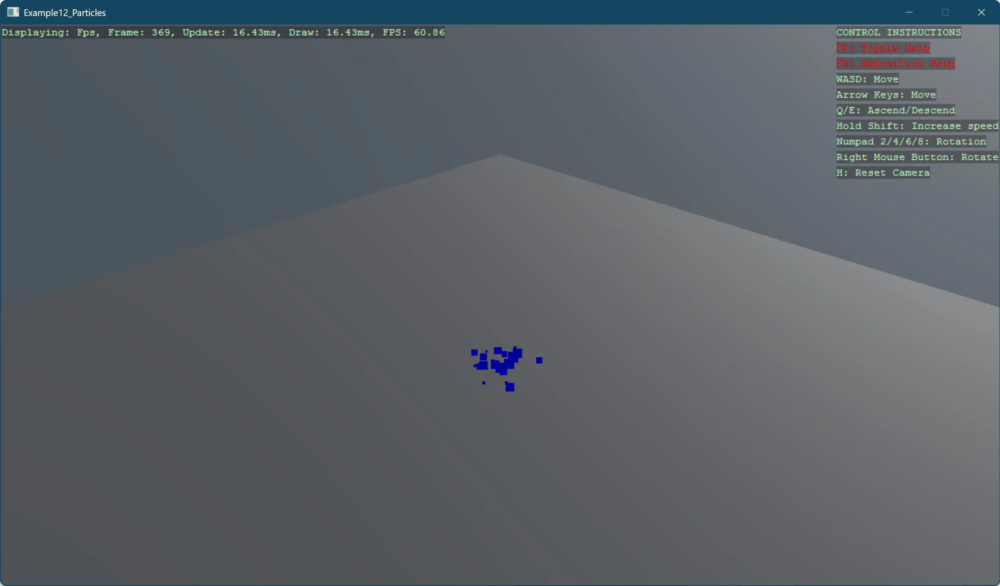

Particles
This example demonstrates how to create and configure a particle system. The sample shows:
- Setting up a basic 3D scene with camera, lighting, and ground
- Creating a particle emitter with blue colored particles
- Configuring particle properties including lifetime, size, and spawn rate
- Setting up particle initializers for random starting positions and velocities
- Adding gravity to affect particle movement over time
- Using billboard shapes for rendering particles
The particles are spawned at a rate of 50 per second from a small area and shoot upward before gravity pulls them back down, creating a fountain-like effect. The particles have varying sizes between 0.1 and 0.5 units, with a blue color.
This example demonstrates fundamental concepts of particle systems in Stride, showing how to create dynamic visual effects through code.
Note
This example requires the additional NuGet packages Stride.CommunityToolkit.Skyboxes and Stride.CommunityToolkit.Bepu. Make sure to install both before running the code.

View on GitHub.
using Stride.CommunityToolkit.Bepu;
using Stride.CommunityToolkit.Engine;
using Stride.CommunityToolkit.Games;
using Stride.CommunityToolkit.Skyboxes;
using Stride.Core.Mathematics;
using Stride.Engine;
using Stride.Particles;
using Stride.Particles.Components;
using Stride.Particles.Initializers;
using Stride.Particles.Materials;
using Stride.Particles.Modules;
using Stride.Particles.ShapeBuilders;
using Stride.Particles.Spawners;
using Stride.Rendering.Materials.ComputeColors;
using var game = new Game();
game.Run(start: Start);
void Start(Scene scene)
{
SetupBaseScene();
game.AddSkybox();
game.AddProfiler();
game.SetMaxFPS(60);
CreateParticleEffect();
}
void SetupBaseScene()
{
game.AddGraphicsCompositor();
game.Add3DCamera().Add3DCameraController();
game.AddDirectionalLight();
game.AddSkybox();
game.Add3DGround();
game.AddParticleRenderer();
}
void CreateParticleEffect()
{
var emitter = new ParticleEmitter
{
ParticleLifetime = new Vector2(0.5f, 0.5f),
SimulationSpace = EmitterSimulationSpace.World,
RandomSeedMethod = EmitterRandomSeedMethod.Time,
ShapeBuilder = new ShapeBuilderBillboard(),
Material = new ParticleMaterialComputeColor()
{
ComputeColor = new ComputeColor()
{
Value = new Color4(0, 0, 1, 1)
}
},
};
emitter.Spawners.Add(new SpawnerPerSecond()
{
LoopCondition = SpawnerLoopCondition.Looping,
Delay = new Vector2(),
Duration = new Vector2(1, 1),
SpawnCount = 50,
});
var sizeInitializer = new InitialSizeSeed()
{
ScaleUniform = 0.3f,
RandomSize = new Vector2(0.1f, 0.5f),
};
var positionInitializer = new InitialPositionSeed()
{
PositionMin = new Vector3(-0.03f, -0.03f, -0.03f),
PositionMax = new Vector3(0.03f, 0.03f, 0.03f),
};
var velocityInitialzer = new InitialVelocitySeed()
{
VelocityMin = new Vector3(0, 3, 0),
VelocityMax = new Vector3(3, 4, 3),
};
emitter.Initializers.Add(sizeInitializer);
emitter.Initializers.Add(positionInitializer);
emitter.Initializers.Add(velocityInitialzer);
emitter.Updaters.Add(new UpdaterGravity() { GravitationalAcceleration = new Vector3(0, -9.8f, 0) });
var particleSettings = new ParticleSystemSettings
{
WarmupTime = 0,
};
ParticleSystemComponent particles = new()
{
Color = Color.White,
RenderGroup = Stride.Rendering.RenderGroup.Group0,
Speed = 1,
};
particles.ParticleSystem.Emitters.Add(emitter);
particles.ParticleSystem.Settings = particleSettings;
var entity = new Entity
{
particles
};
entity.Name = "Particles";
entity.Scene = game.SceneSystem.SceneInstance.RootScene;
}